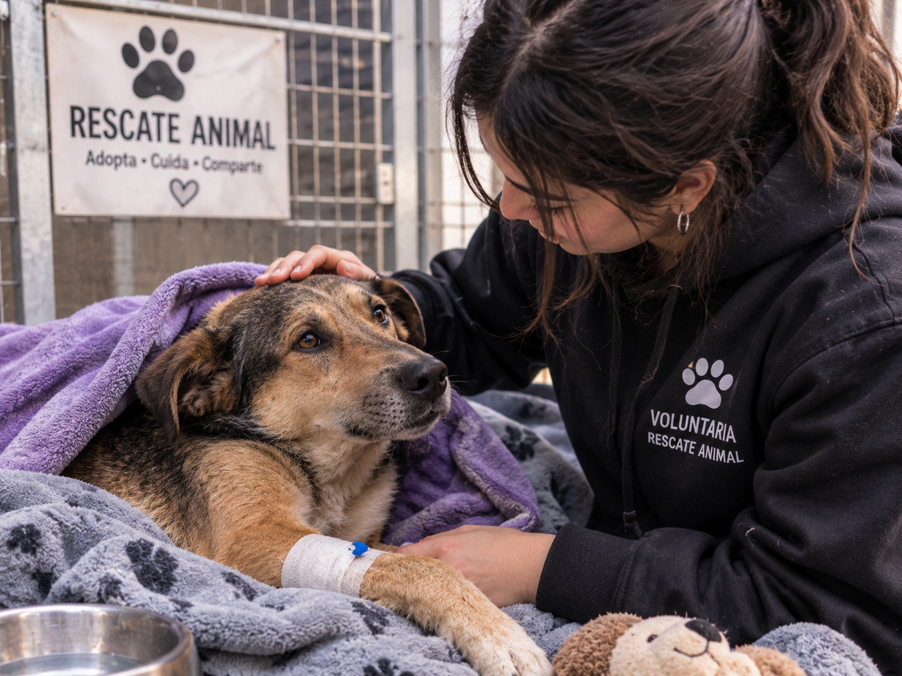
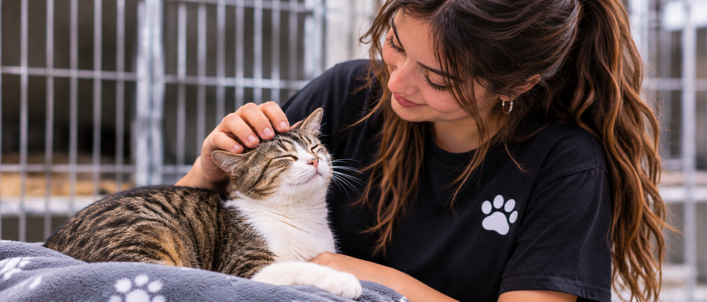
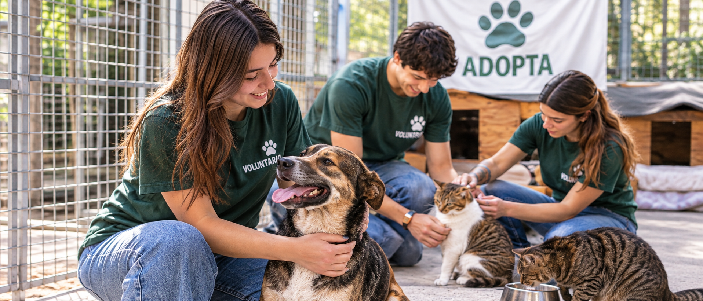

Misión
Promover la adopción responsable y el bienestar de perros y gatos, orientando a las familias y fomentando una cultura de respeto y compromiso hacia los animales.
Conoce el propósito que guía a Huellas & Hogar y nuestro compromiso con el bienestar animal.

Huellas & Hogar es una propuesta de fundación enfocada en promover la adopción responsable de perros y gatos. Buscamos sensibilizar a la comunidad sobre el respeto, la protección y las necesidades de los animales.
Nuestro trabajo se basa en orientar a quienes desean adoptar y difundir información para que cada decisión considere el bienestar de la mascota.
Dos ideas que orientan las acciones y objetivos de Huellas & Hogar.
Promover la adopción responsable y el bienestar de perros y gatos, orientando a las familias y fomentando una cultura de respeto y compromiso hacia los animales.
Contribuir a una comunidad más consciente y empática, donde la adopción responsable sea una alternativa reconocida y cada animal tenga la oportunidad de vivir en un entorno seguro.


Puedes ayudar adoptando, difundiendo o consultando por las formas de colaboración.
Conversemos